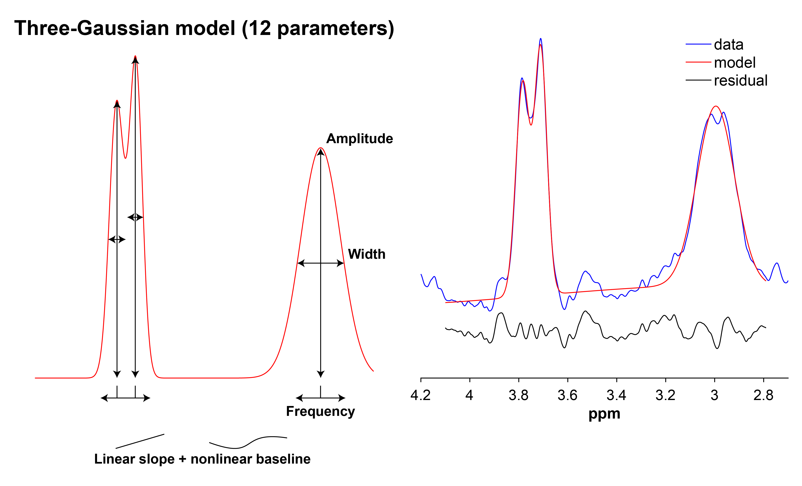
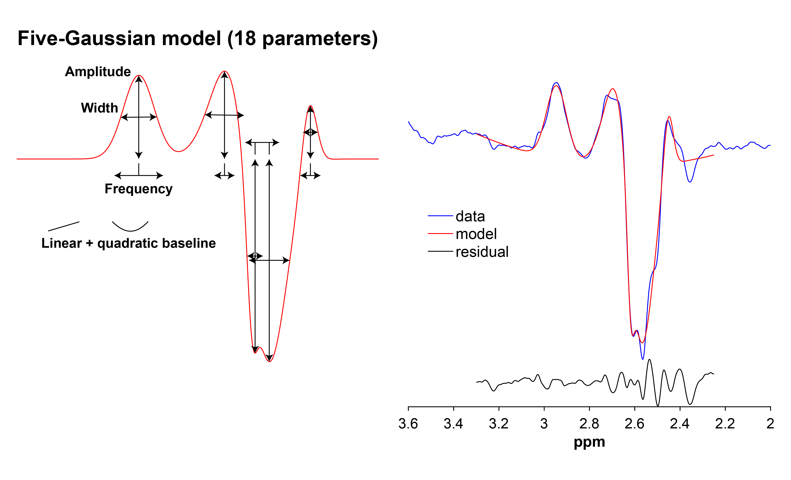
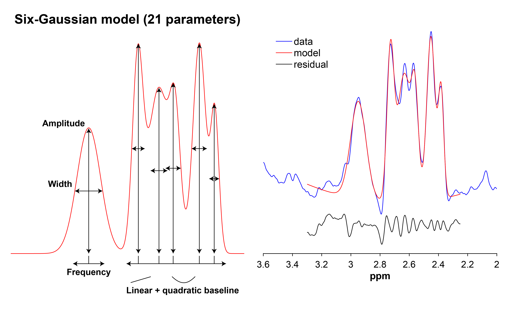
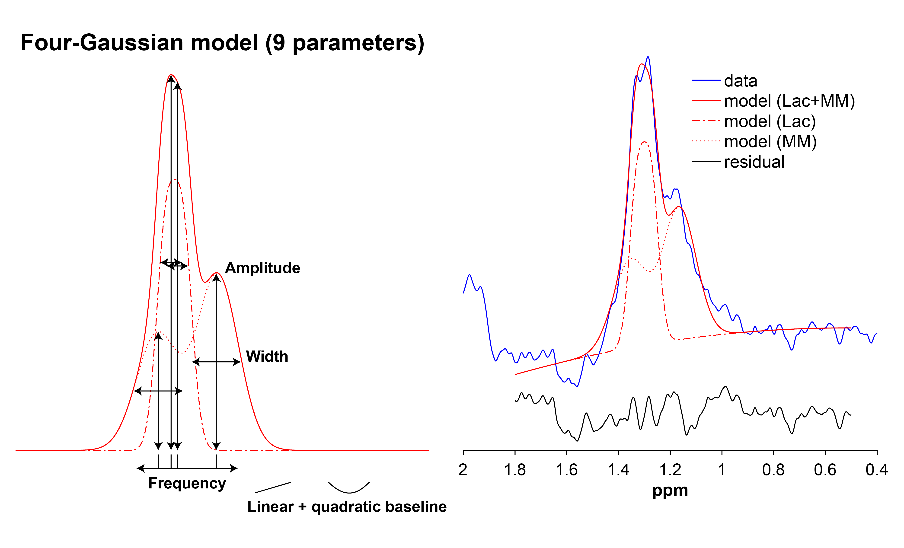
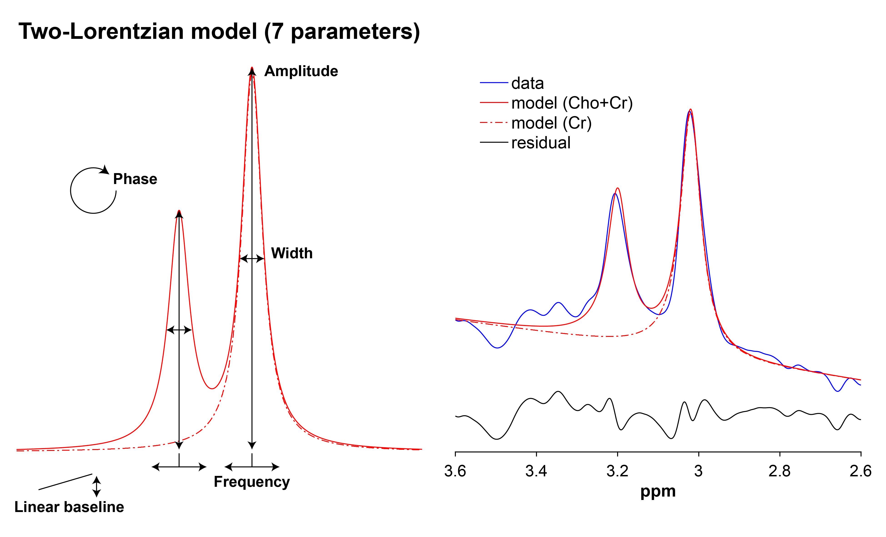
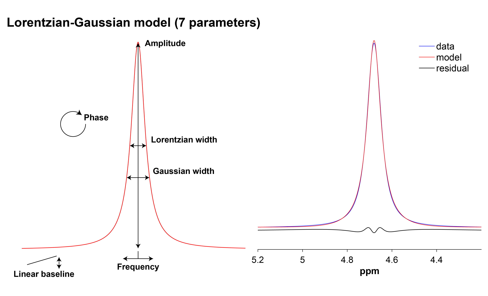

Back to top
This page describes the functions Gannet uses to model metabolite
signals. Note that when the definition of a parameter is omitted from a
table under a particular metabolite, it is implied that it has been
defined already in a previously described function.
For all model fitting, Gannet uses nonlinear regression, with fit
parameters optimized using the least-squares Levenberg-Marquardt
algorithm. For increased computational speed and a better solution, the
starting values of the optimization are derived from a “pre-fit” that
uses the trust-region-reflective algorithm. Description of these
algorithms can be found in the
online
MATLAB documentation .
GABA+Glx
GABA and Glx are fitted using a three-Gaussian model with a linear
slope and non-linear baseline:
\[
S(f) =
\sum_{i=1}^{3}\left\{A_i\exp[\sigma_i(f-f_i)^2]\right\}+
m(f-f_1)+
b_1\sin(\pi{f}/1.31/4)+
b_2\cos(\pi{f}/1.31/4)
\]
where:
\(f\) Frequency (ppm)
\(A_i\) Gaussian i ’s amplitude
\(\sigma_i\) Gaussian i ’s width
\(f_i\) Gaussian i ’s center frequency (ppm)
\(m\) Slope of linear baseline
\(b_1\) Sine baseline term
\(b_2\) Cosine baseline term
1

GSH (TE < 100 ms)
GSH that is edited at a TE < 100 ms is fitted with a five-Gaussian
model with a linear + quadratic baseline:
\[
S(f) =
\sum_{i=1}^{5}\left\{A_i\exp[\sigma_i(f-f_i)^2]\right\}+
m_1(f-f_1)+
m_2(f-f_1)^2+b
\]
where:
\(m_1\) Slope of linear baseline
\(m_2\) Quadratic baseline term
\(b\) Baseline offset

GSH (TE >= 100 ms)
GSH that is edited at a TE >= 100 ms is fitted with a six-Gaussian
model with a linear + quadratic baseline:
\[
S(f) =
\sum_{i=1}^{6}\left\{A_i\exp[\sigma_i(f-f_i)^2]\right\}+
m_1(f-f_1)+
m_2(f-f_1)^2+b
\]

Lac
Lac is fitted with a four-Gaussian model with a linear + quadratic
baseline:
\[
S(f) =
\sum_{i=1}^{4}\left\{A_i\exp[\sigma_i(f-f_i)^2]\right\}+
m_1(f-f_1)+
m_2(f-f_1)^2+b
\]

EtOH
EtOH is fitted with a two-Lorentzian model with a linear
baseline:
\[
S(f) =
\sum_{i=1}^{2}\left[\frac{A_{i}}{1+\left(\frac{f-f_{i}}{\gamma_{i}/2}\right)^2}\right]+
m(f-f_1)+b
\]
where:
\(A_i\) Lorentzian i ’s amplitude
\(f_i\) Lorentzian i ’s center frequency (ppm)
\(\gamma\) Lorentzian width (full-width at half-maximum)
Cho+Cr
Cho and Cr in the edit-OFF spectrum are fitted with a two-Lorentzian
model with a linear baseline:
\[
Absorption(f) =
\frac{A}{2\pi}\frac{\gamma}{(f-f_0)^2+\gamma^2}+
\frac{Ah}{2\pi}\frac{\gamma}{(f-f_0-0.18)^2+\gamma^2}
\] \[
Dispersion(f) =
\frac{A}{2\pi}\frac{f-f_0}{(f-f_0)^2+\gamma^2}+
\frac{Ah}{2\pi}\frac{f-f_0-0.18}{(f-f_0-0.18)^2+\gamma^2}
\]
\[
S(f) =
\cos(\varphi)Absorption(f)+
\sin(\varphi)Dispersion(f)+
m(f-f_0)+b
\]
where:
\(A\) Amplitude of Cr peak
\(\gamma\) Lorentzian width (half-width at half-maximum)
\(f_0\) Center frequency of Cr peak
\(h\) Amplitude scaling factor for Cho peak
\(\varphi\) Phase

NAA
NAA in the edit-OFF spectrum is fitted with a Lorentzian model with a
linear baseline:
\[
Absorption(f) =
\frac{A}{2\pi}\frac{\gamma}{(f-f_0)^2+\gamma^2}
\] \[
Dispersion(f) =
\frac{A}{2\pi}\frac{(f-f_0)}{(f-f_0)^2+\gamma^2}
\]
\[
S(f) =
\cos(\varphi)Absorption(f)+
\sin(\varphi)Dispersion(f)+
m(f-f_0)+b
\]
Water
The unsurpressed water signal is fitted with a Lorentzian-Gaussian
model with a linear baseline:
\[
S(f) =
\frac{\cos(\varphi)A+\sin(\varphi)A\gamma(f-f_0)}
{\gamma^2(f-f_0)^2+1}
\exp[\sigma(f-f_0)^2]+
m(f-f_0)+b
\]

References
1.
Evans CJ, Puts NAJ, Robson SE, et al.
Subtraction artifacts and frequency (Mis-)alignment in
J-difference GABA editing .
Journal of Magnetic Resonance
Imaging . 2013;38(4):970-975. doi:
10.1002/jmri.23923
LS0tCnRpdGxlOiAiU2lnbmFsIG1vZGVsaW5nIgpkYXRlOiAiTGFzdCB1cGRhdGVkOiBgciBmb3JtYXQoU3lzLnRpbWUoKSwgJyVCICVkLCAlWScpYCIKYmlibGlvZ3JhcGh5OiByZWZlcmVuY2VzLmJpYgpjc2w6IGFtZXJpY2FuLW1lZGljYWwtYXNzb2NpYXRpb24uY3NsCmxpbmstY2l0YXRpb25zOiB5ZXMKb3V0cHV0OgogIGh0bWxfZG9jdW1lbnQ6CiAgICB0b2M6IFRSVUUKICAgIHRvY19kZXB0aDogMgogICAgdG9jX2Zsb2F0OgogICAgICBjb2xsYXBzZWQ6IEZBTFNFCi0tLQoKYGBge3Igc2V0dXAsIGluY2x1ZGUgPSBGQUxTRX0Ka25pdHI6Om9wdHNfY2h1bmskc2V0KGVjaG8gPSBUUlVFKQpgYGAKCmBgYHtyLCBjaGlsZCA9ICJqcy9iYWNrLXRvLXRvcC5qcyJ9CmBgYAoKYGBge2NzcywgZWNobyA9IEZBTFNFfQp0YWJsZSB7CiAgbWFyZ2luOiBhdXRvOwp9Cgp0YWJsZSB0aGVhZCB0aCB7CiAgYm9yZGVyLWJvdHRvbTogMXB4IHNvbGlkICNkZGQ7Cn0KCnRoLCB0ZCB7CiAgcGFkZGluZzogNXB4Owp9Cgp0Zm9vdCwgdHI6bnRoLWNoaWxkKGV2ZW4pIHsKICBiYWNrZ3JvdW5kOiAjZWVlOwp9CmBgYAoKPGJyPgoKVGhpcyBwYWdlIGRlc2NyaWJlcyB0aGUgZnVuY3Rpb25zIEdhbm5ldCB1c2VzIHRvIG1vZGVsIG1ldGFib2xpdGUgc2lnbmFscy4gTm90ZSB0aGF0IHdoZW4gdGhlIGRlZmluaXRpb24gb2YgYSBwYXJhbWV0ZXIgaXMgb21pdHRlZCBmcm9tIGEgdGFibGUgdW5kZXIgYSBwYXJ0aWN1bGFyIG1ldGFib2xpdGUsIGl0IGlzIGltcGxpZWQgdGhhdCBpdCBoYXMgYmVlbiBkZWZpbmVkIGFscmVhZHkgaW4gYSBwcmV2aW91c2x5IGRlc2NyaWJlZCBmdW5jdGlvbi4KCkZvciBhbGwgbW9kZWwgZml0dGluZywgR2FubmV0IHVzZXMgbm9ubGluZWFyIHJlZ3Jlc3Npb24sIHdpdGggZml0IHBhcmFtZXRlcnMgb3B0aW1pemVkIHVzaW5nIHRoZSBsZWFzdC1zcXVhcmVzIExldmVuYmVyZy1NYXJxdWFyZHQgYWxnb3JpdGhtLiBGb3IgaW5jcmVhc2VkIGNvbXB1dGF0aW9uYWwgc3BlZWQgYW5kIGEgYmV0dGVyIHNvbHV0aW9uLCB0aGUgc3RhcnRpbmcgdmFsdWVzIG9mIHRoZSBvcHRpbWl6YXRpb24gYXJlIGRlcml2ZWQgZnJvbSBhICJwcmUtZml0IiB0aGF0IHVzZXMgdGhlIHRydXN0LXJlZ2lvbi1yZWZsZWN0aXZlIGFsZ29yaXRobS4gRGVzY3JpcHRpb24gb2YgdGhlc2UgYWxnb3JpdGhtcyBjYW4gYmUgZm91bmQgaW4gdGhlIDxhIGhyZWY9Imh0dHBzOi8vd3d3Lm1hdGh3b3Jrcy5jb20vaGVscC9vcHRpbS91Zy9sZWFzdC1zcXVhcmVzLW1vZGVsLWZpdHRpbmctYWxnb3JpdGhtcy5odG1sIiB0YXJnZXQ9Il9ibGFuayI+b25saW5lIE1BVExBQiBkb2N1bWVudGF0aW9uPC9hPi4KCiMjIEdBQkErR2x4CgpHQUJBIGFuZCBHbHggYXJlIGZpdHRlZCB1c2luZyBhIHRocmVlLUdhdXNzaWFuIG1vZGVsIHdpdGggYSBsaW5lYXIgc2xvcGUgYW5kIG5vbi1saW5lYXIgYmFzZWxpbmU6CgokJApTKGYpID0KXHN1bV97aT0xfV57M31cbGVmdFx7QV9pXGV4cFtcc2lnbWFfaShmLWZfaSleMl1ccmlnaHRcfSsKbShmLWZfMSkrCmJfMVxzaW4oXHBpe2Z9LzEuMzEvNCkrCmJfMlxjb3MoXHBpe2Z9LzEuMzEvNCkKJCQKCndoZXJlOgoKfCA8dT5QYXJhbWV0ZXI8L3U+IHwgPHU+RGVmaW5pdGlvbjwvdT4gfAp8IDotIHwgOi0tLS0tLS0tIHwKfCAkZiQgfCBGcmVxdWVuY3kgKHBwbSkgfAp8ICRBX2kkIHwgR2F1c3NpYW4gKmkqJ3MgYW1wbGl0dWRlIHwKfCAkXHNpZ21hX2kkIHwgR2F1c3NpYW4gKmkqJ3Mgd2lkdGggfAp8ICRmX2kkIHwgR2F1c3NpYW4gKmkqJ3MgY2VudGVyIGZyZXF1ZW5jeSAocHBtKSB8CnwgJG0kIHwgU2xvcGUgb2YgbGluZWFyIGJhc2VsaW5lIHwKfCAkYl8xJCB8IFNpbmUgYmFzZWxpbmUgdGVybSB8CnwgJGJfMiQgfCBDb3NpbmUgYmFzZWxpbmUgdGVybSB8Cgo6OjogaW5mbwo8aSBjbGFzcz0iZmEgZmEtaW5mby1jaXJjbGUiIHN0eWxlPSJjb2xvcjogd2hpdGUiPjwvaT4mbmJzcDsgVGhlIEdBQkErR2x4IG1vZGVsIGlzIGZpdHRlZCB1c2luZyBhIG1vZGVsIHRoYXQgaGFzIG9ic2VydmF0aW9uIHdlaWdodHMgYmV0d2VlbiAzLjE2IGFuZCAzLjI4NSBwcG0sIHdoZXJlIHRoZSBDaG8gc3VidHJhY3Rpb24gYXJ0aWZhY3QgW0BFdmFuczIwMTNdIGFwcGVhcnMuIFRoZSBwdXJwb3NlIGlzIHRvIGRvd24td2VpZ2h0IHRoZSBpbmZsdWVuY2Ugb2YgdGhpcyBhcnRpZmFjdCAoaWYgcHJlc2VudCkgb24gdGhlIG1vZGVsIGZpdHRpbmcuCjo6OgoKPGltZyBpZD0iaW1nXzc1IiBzcmM9ImltYWdlcy9zaWduYWwtbW9kZWxpbmcvR0FCQStHbHgucG5nIiBhbHQ9IklsbHVzdHJhdGlvbiBvZiB0aGUgR0FCQStHbHggbW9kZWwiPgoKIyMgR1NIIChURSA8IDEwMCBtcykKCkdTSCB0aGF0IGlzIGVkaXRlZCBhdCBhIFRFIDwgMTAwIG1zIGlzIGZpdHRlZCB3aXRoIGEgZml2ZS1HYXVzc2lhbiBtb2RlbCB3aXRoIGEgbGluZWFyICsgcXVhZHJhdGljIGJhc2VsaW5lOgoKJCQKUyhmKSA9ClxzdW1fe2k9MX1eezV9XGxlZnRce0FfaVxleHBbXHNpZ21hX2koZi1mX2kpXjJdXHJpZ2h0XH0rCm1fMShmLWZfMSkrCm1fMihmLWZfMSleMitiCiQkCgp3aGVyZToKCnwgPHU+UGFyYW1ldGVyPC91PiB8IDx1PkRlZmluaXRpb248L3U+IHwKfCA6LSB8IDotLS0tLS0tLSB8CnwgJG1fMSQgfCBTbG9wZSBvZiBsaW5lYXIgYmFzZWxpbmUgfAp8ICRtXzIkIHwgUXVhZHJhdGljIGJhc2VsaW5lIHRlcm0gfAp8ICRiJCB8IEJhc2VsaW5lIG9mZnNldCB8Cgo8aW1nIGlkPSJpbWdfNzUiIHNyYz0iaW1hZ2VzL3NpZ25hbC1tb2RlbGluZy9HU0gtODAucG5nIiBhbHQ9IklsbHVzdHJhdGlvbiBvZiB0aGUgR1NIIG1vZGVsIGF0IFRFID0gODAgbXMiPgoKIyMgR1NIIChURSA+PSAxMDAgbXMpCgpHU0ggdGhhdCBpcyBlZGl0ZWQgYXQgYSBURSA+PSAxMDAgbXMgaXMgZml0dGVkIHdpdGggYSBzaXgtR2F1c3NpYW4gbW9kZWwgd2l0aCBhIGxpbmVhciArIHF1YWRyYXRpYyBiYXNlbGluZToKCiQkClMoZikgPQpcc3VtX3tpPTF9Xns2fVxsZWZ0XHtBX2lcZXhwW1xzaWdtYV9pKGYtZl9pKV4yXVxyaWdodFx9KwptXzEoZi1mXzEpKwptXzIoZi1mXzEpXjIrYgokJAoKPGltZyBpZD0iaW1nXzc1IiBzcmM9ImltYWdlcy9zaWduYWwtbW9kZWxpbmcvR1NILTEyMC5wbmciIGFsdD0iSWxsdXN0cmF0aW9uIG9mIHRoZSBHU0ggbW9kZWwgYXQgVEUgPSAxMjAgbXMiPgoKIyMgTGFjCgo6OjogaW5mbwo8aSBjbGFzcz0iZmEgZmEtaW5mby1jaXJjbGUiIHN0eWxlPSJjb2xvcjogd2hpdGUiPjwvaT4gT3B0aW1pemF0aW9uIG9mIHRoZSBtb2RlbGluZyBvZiBlZGl0ZWQgTGFjIGlzIG9uZ29pbmcuCjo6OgoKTGFjIGlzIGZpdHRlZCB3aXRoIGEgZm91ci1HYXVzc2lhbiBtb2RlbCB3aXRoIGEgbGluZWFyICsgcXVhZHJhdGljIGJhc2VsaW5lOgoKJCQKUyhmKSA9ClxzdW1fe2k9MX1eezR9XGxlZnRce0FfaVxleHBbXHNpZ21hX2koZi1mX2kpXjJdXHJpZ2h0XH0rCm1fMShmLWZfMSkrCm1fMihmLWZfMSleMitiCiQkCgo8aW1nIGlkPSJpbWdfNzUiIHNyYz0iaW1hZ2VzL3NpZ25hbC1tb2RlbGluZy9MYWMucG5nIiBhbHQ9IklsbHVzdHJhdGlvbiBvZiB0aGUgTGFjIG1vZGVsIj4KCiMjIEV0T0gKCkV0T0ggaXMgZml0dGVkIHdpdGggYSB0d28tTG9yZW50emlhbiBtb2RlbCB3aXRoIGEgbGluZWFyIGJhc2VsaW5lOgoKJCQKUyhmKSA9ClxzdW1fe2k9MX1eezJ9XGxlZnRbXGZyYWN7QV97aX19ezErXGxlZnQoXGZyYWN7Zi1mX3tpfX17XGdhbW1hX3tpfS8yfVxyaWdodCleMn1ccmlnaHRdKwptKGYtZl8xKStiCiQkCgp3aGVyZToKCnwgPHU+UGFyYW1ldGVyPC91PiB8IDx1PkRlZmluaXRpb248L3U+IHwKfCA6LSB8IDotLS0tLS0tLSB8CnwgJEFfaSQgfCBMb3JlbnR6aWFuICppKidzIGFtcGxpdHVkZSB8CnwgJGZfaSQgfCBMb3JlbnR6aWFuICppKidzIGNlbnRlciBmcmVxdWVuY3kgKHBwbSkgfAp8ICRcZ2FtbWEkIHwgTG9yZW50emlhbiB3aWR0aCAoZnVsbC13aWR0aCBhdCBoYWxmLW1heGltdW0pIHwKCjo6OiBpbmZvCjxpIGNsYXNzPSJmYSBmYS1pbmZvLWNpcmNsZSIgc3R5bGU9ImNvbG9yOiB3aGl0ZSI+PC9pPiZuYnNwOyBUaGUgRXRPSCBtb2RlbCBpcyBmaXR0ZWQgdXNpbmcgYSBtb2RlbCB0aGF0IGhhcyBvYnNlcnZhdGlvbiB3ZWlnaHRzIGJldHdlZW4gMS4yOSBhbmQgMS41MSBwcG0sIHdoZXJlIHRoZSBMYWMgc3VidHJhY3Rpb24gYXJ0aWZhY3QgYXBwZWFycy4gVGhlIHB1cnBvc2UgaXMgdG8gZG93bi13ZWlnaHQgdGhlIGluZmx1ZW5jZSBvZiB0aGlzIGFydGlmYWN0IChpZiBwcmVzZW50KSBvbiB0aGUgbW9kZWwgZml0dGluZy4KOjo6CgojIyBDaG8rQ3IKCkNobyBhbmQgQ3IgaW4gdGhlIGVkaXQtT0ZGIHNwZWN0cnVtIGFyZSBmaXR0ZWQgd2l0aCBhIHR3by1Mb3JlbnR6aWFuIG1vZGVsIHdpdGggYSBsaW5lYXIgYmFzZWxpbmU6CgokJApBYnNvcnB0aW9uKGYpID0KXGZyYWN7QX17MlxwaX1cZnJhY3tcZ2FtbWF9eyhmLWZfMCleMitcZ2FtbWFeMn0rClxmcmFje0FofXsyXHBpfVxmcmFje1xnYW1tYX17KGYtZl8wLTAuMTgpXjIrXGdhbW1hXjJ9CiQkCiQkCkRpc3BlcnNpb24oZikgPQpcZnJhY3tBfXsyXHBpfVxmcmFje2YtZl8wfXsoZi1mXzApXjIrXGdhbW1hXjJ9KwpcZnJhY3tBaH17MlxwaX1cZnJhY3tmLWZfMC0wLjE4fXsoZi1mXzAtMC4xOCleMitcZ2FtbWFeMn0KJCQKCiQkClMoZikgPQpcY29zKFx2YXJwaGkpQWJzb3JwdGlvbihmKSsKXHNpbihcdmFycGhpKURpc3BlcnNpb24oZikrCm0oZi1mXzApK2IKJCQKCndoZXJlOgoKfCA8dT5QYXJhbWV0ZXI8L3U+IHwgPHU+RGVmaW5pdGlvbjwvdT4gfAp8IDotIHwgOi0tLS0tLS0tIHwKfCAkQSQgfCBBbXBsaXR1ZGUgb2YgQ3IgcGVhayB8CnwgJFxnYW1tYSQgfCBMb3JlbnR6aWFuIHdpZHRoIChoYWxmLXdpZHRoIGF0IGhhbGYtbWF4aW11bSkgfAp8ICRmXzAkIHwgQ2VudGVyIGZyZXF1ZW5jeSBvZiBDciBwZWFrIHwKfCAkaCQgfCBBbXBsaXR1ZGUgc2NhbGluZyBmYWN0b3IgZm9yIENobyBwZWFrIHwKfCAkXHZhcnBoaSQgfCBQaGFzZSB8Cgo8aW1nIGlkPSJpbWdfNzUiIHNyYz0iaW1hZ2VzL3NpZ25hbC1tb2RlbGluZy9DaG8rQ3IucG5nIiBhbHQ9IklsbHVzdHJhdGlvbiBvZiB0aGUgQ2hvK0NyIG1vZGVsIj4KCiMjIE5BQQoKTkFBIGluIHRoZSBlZGl0LU9GRiBzcGVjdHJ1bSBpcyBmaXR0ZWQgd2l0aCBhIExvcmVudHppYW4gbW9kZWwgd2l0aCBhIGxpbmVhciBiYXNlbGluZToKCiQkCkFic29ycHRpb24oZikgPQpcZnJhY3tBfXsyXHBpfVxmcmFje1xnYW1tYX17KGYtZl8wKV4yK1xnYW1tYV4yfQokJAokJApEaXNwZXJzaW9uKGYpID0KXGZyYWN7QX17MlxwaX1cZnJhY3soZi1mXzApfXsoZi1mXzApXjIrXGdhbW1hXjJ9CiQkCgokJApTKGYpID0KXGNvcyhcdmFycGhpKUFic29ycHRpb24oZikrClxzaW4oXHZhcnBoaSlEaXNwZXJzaW9uKGYpKwptKGYtZl8wKStiCiQkCgojIyBXYXRlcgoKVGhlIHVuc3VycHJlc3NlZCB3YXRlciBzaWduYWwgaXMgZml0dGVkIHdpdGggYSBMb3JlbnR6aWFuLUdhdXNzaWFuIG1vZGVsIHdpdGggYSBsaW5lYXIgYmFzZWxpbmU6CgokJApTKGYpID0gClxmcmFje1xjb3MoXHZhcnBoaSlBK1xzaW4oXHZhcnBoaSlBXGdhbW1hKGYtZl8wKX0Ke1xnYW1tYV4yKGYtZl8wKV4yKzF9ClxleHBbXHNpZ21hKGYtZl8wKV4yXSsKbShmLWZfMCkrYgokJAoKPGltZyBpZD0iaW1nXzc1IiBzcmM9ImltYWdlcy9zaWduYWwtbW9kZWxpbmcvd2F0ZXIucG5nIiBhbHQ9IklsbHVzdHJhdGlvbiBvZiB0aGUgd2F0ZXIgbW9kZWwiPgoKPGJyPgoKIyMjIFJlZmVyZW5jZXMKCgoKCgoKCgo=
Built with R Markdown in RStudio .
Copyright © 2020–2023, Mark Mikkelsen